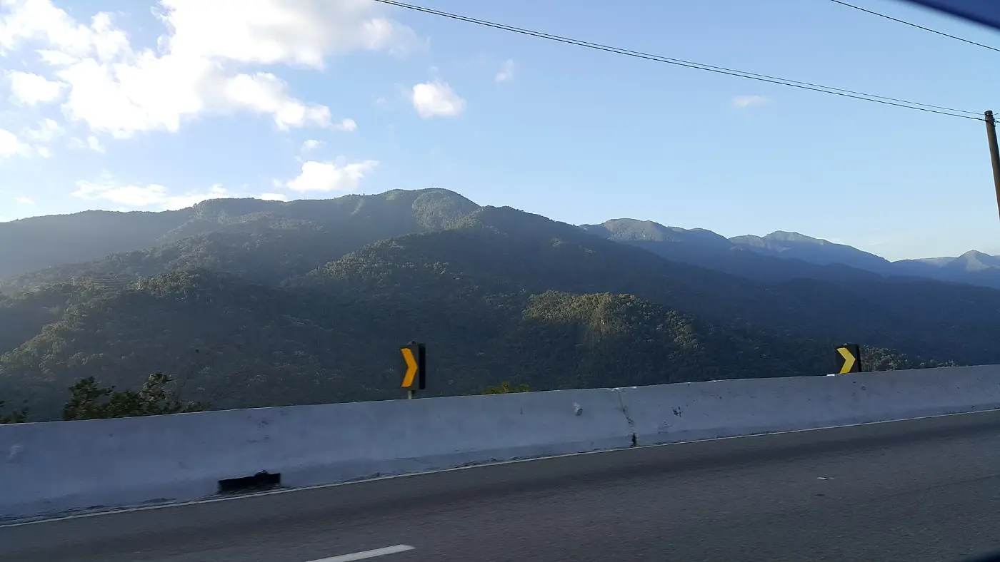
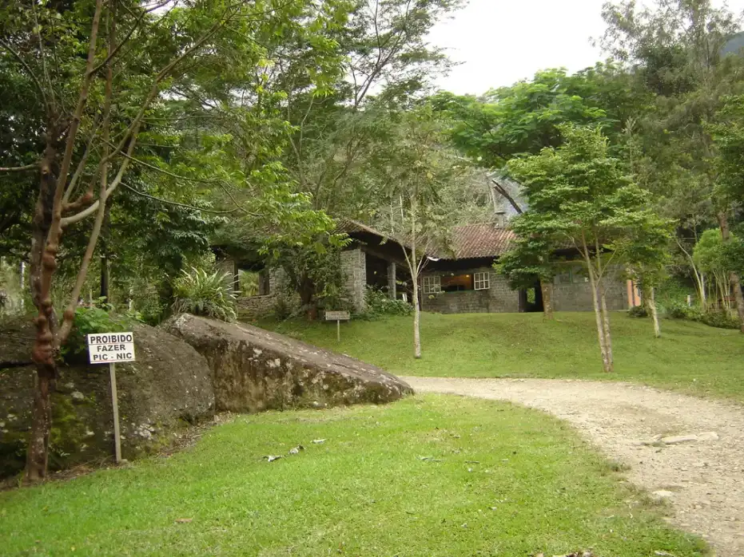
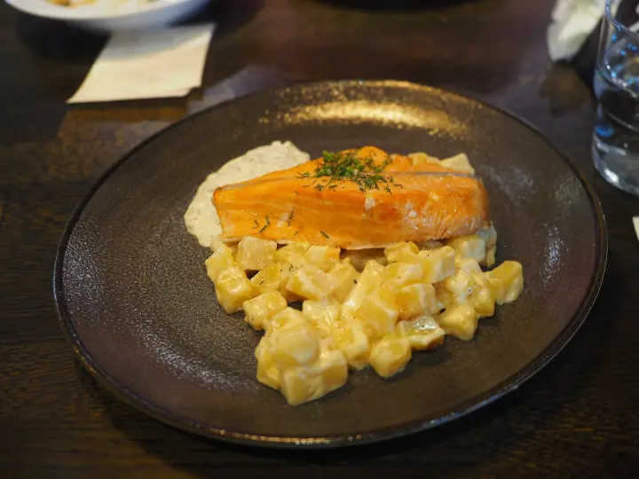
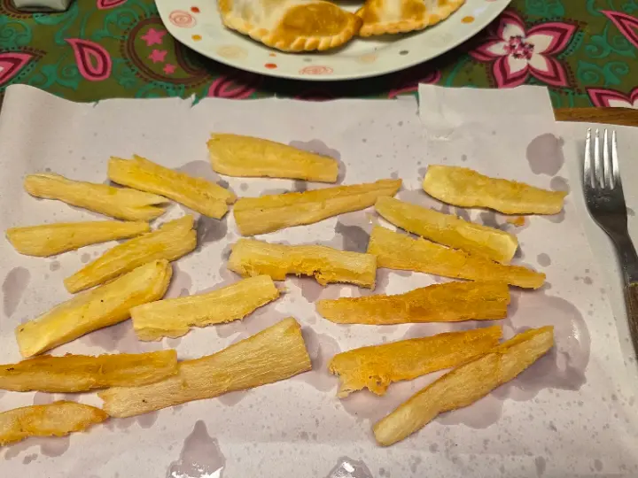
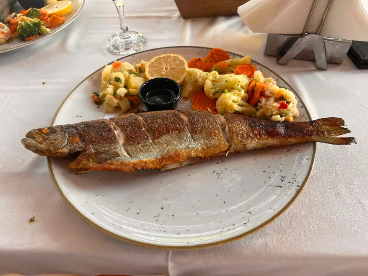

Um WhatsApp que atende sozinho
Hoje o contato no Google é o fixo. Um número de WhatsApp para reservas pega o pedido que chega às onze da noite, quando ninguém atenderia o telefone.

Chácara do Moinho · Cachoeira Paulista
Quem passa pelas avaliações encontra truta com mandioca, cerveja gelada, preço justo e donos que recebem como anfitriões.
A casa
O Google resume assim: pescado típico da região com acompanhamentos, camarão à milanesa e lanches, num espaço tranquilo. As avaliações completam o resto: aconchegante, boa música, bebida na temperatura certa e preço justo.
Tem quem venha para o happy hour e quem esteja numa pousada ali perto e desça para jantar. Os dois costumam sair falando da truta e de quem atende.

Da cozinha
Todos aparecem nas avaliações e no resumo do Google. As fotos são ilustrativas até entrarem as da casa.

Com arroz, do jeito que um cliente descreveu: muito saborosa e valendo a pena.
Foto ilustrativa

A pedida de quem chega para o happy hour e quer dividir.
Foto ilustrativa

O pescado típico daqui, com acompanhamentos. É o destaque da casa no resumo do Google.
Foto ilustrativa
Você escolhe o dia, o horário e quantas pessoas. A casa recebe a reserva escrita, sem ligação perdida no meio do almoço.
Onde fica
Na Chácara do Moinho, em Cachoeira Paulista.

Hoje o contato publicado no Google é o telefone fixo da casa.
Endereço, contato e horário como estão no Google hoje.
Fim de semana
Escolha quantas pessoas, o dia e o horário. A tela só mostra os horários em que a casa está aberta.
Daqui para baixo é recado para quem toca o Terraço A Casa da Truta. O que está acima é a página como o cliente veria. O que vem agora é a proposta da HIGH Development.
Ler a propostaDepois da reserva
Não precisa ser tudo de uma vez. Cada item resolve uma dor diferente do salão.
Hoje o contato no Google é o fixo. Um número de WhatsApp para reservas pega o pedido que chega às onze da noite, quando ninguém atenderia o telefone.
Quem reserva recebe na hora a confirmação com dia, horário e o endereço com mapa. Menos gente perdida procurando a Chácara do Moinho.
Três horas antes, o cliente recebe um lembrete. Se desistir, cancela ali mesmo, e a mesa volta para quem está esperando.
Casa cheia, a pessoa entra na fila pelo celular e é chamada quando vagar mesa. Ninguém fica em pé na porta sem saber quanto falta.
No dia seguinte sai o convite. Com 4,5 e 294 avaliações, cada nova ajuda o turista da região a escolher vocês.
Na sexta de manhã, quem já veio e aceitou receber fica sabendo do prato do fim de semana ou da música da noite.
Dúvidas
Não. É uma página na internet, abre no navegador do celular. O cliente não baixa aplicativo e vocês não instalam nada.
Funciona. A gente liga um número de WhatsApp só para as reservas, que pode ser um celular da casa. O telefone fixo continua igual.
Vocês respondem que não tem, ou sugerem outro horário. Nenhuma reserva é confirmada sozinha sem vocês quererem.
Dá. Um dia bloqueado some da tela, e quem tentar reservar vê o próximo dia livre.
Do horário que a casa informa no Google. Se mudar lá, a gente muda aqui, ou vocês mesmos mudam por uma tela simples.
Esta demonstração saiu em um dia, só com o que já é público de vocês. Com as fotos da casa em mãos, a versão de verdade sobe na mesma semana.
Recado final, sem rodeio
Montamos por conta própria, com o que já é público do Terraço, para mostrar na prática em vez de explicar por mensagem. Se fizer sentido, a gente termina com as fotos e os pratos de vocês. Se não fizer, é só dizer e ela sai do ar hoje mesmo.
Falar com a gente não custa nada e não gera compromisso. Se preferirem que a página saia do ar agora, basta pedir.
Matheus e Vinicius, de Cachoeira Paulista. Fazemos site e atendimento automático no WhatsApp para o comércio da região. A maior parte do nosso trabalho é com casas de eventos e negócios daqui e de Lorena. Somos dois: quem monta a página é quem responde você depois.